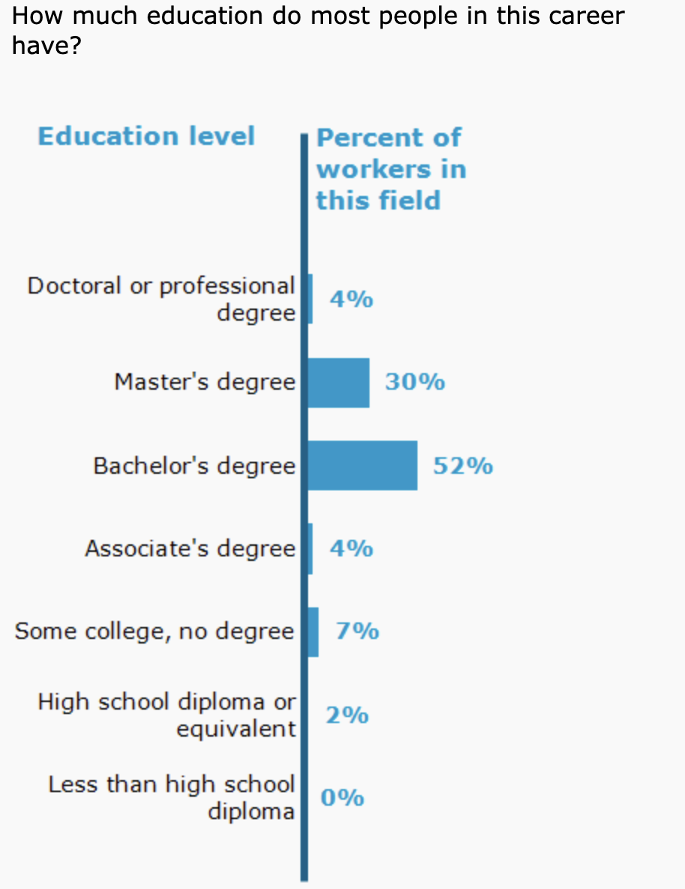
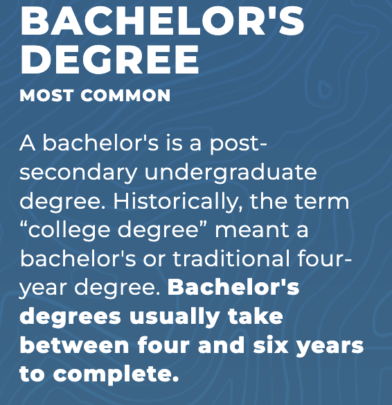

Training / Education
Education & Training Path (General Public)
Typical entry requirement: Bachelor’s degree in Computer Science, Software Engineering, or related field.
Alternative routes: Associate’s degree, coding bootcamps, or self-taught paths (with projects, certifications, and portfolios) can work, though large companies often still prefer a bachelor’s.
Graduate degrees: Not required for most roles, but a Master’s (especially in CS, Data Science, AI, or Cybersecurity) can open leadership or research-focused opportunities.
Education & Training in Washington
Strong programs at UW (Seattle, Bothell, Tacoma), Washington State University, Gonzaga, Western Washington, etc.
Seattle has one of the largest concentrations of coding bootcamps and tech training centers in the U.S. (e.g., Flatiron, General Assembly, Coding Dojo).

